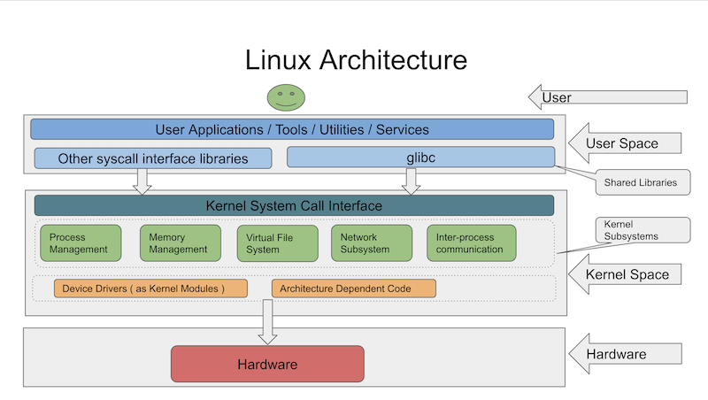

Linuxの基礎知識
はじめに
前提条件
- Windows、Linux、Macなどのオペレーティングシステムを使い慣れていること
- オペレーティングシステムの基礎知識を持っていること
このコースで扱うこと
本コースは3つのパートに分かれています。第1部では、Linuxオペレーティングシステムの基礎をカバーします。Linux アーキテクチャ、Linux ディストリビューション、Linuxオペレーティングシステムの用途について説明します。また、GUIとCLIの違いについても説明します。
第2部では、Linuxで使われる基本的なコマンドを取り上げます。 ファイルシステムの操作、ファイルの表示と操作、I/Oリダイレクトなどに使用されるコマンドに焦点を当てます。
第3部では、Linuxのシステム管理について説明します。ここでは、ユーザー/グループの管理、ファイルのパーミッションの管理、システムのパフォーマンスの監視、ログファイルなど、Linux管理者が行う日常的な作業が含まれます。
第2部と第3部では、例題を取り上げて概念を理解していきます。
このコースでは扱わないこと
このコースでは、Linuxの高度なコマンドやbashスクリプトは扱いません。また、Linuxの内部についても扱いません。
コース内容
本コースでは、以下のトピックをカバーしています。
Linuxオペレーティングシステムとは
75%以上のパソコンに採用されているWindowsオペレーティングシステムをご存知の方も多いと思います。 Windowsオペレーティングシステムは、Windows NTカーネルをベースにしています。
カーネルはオペレーティングシステムの最も重要な部分で、プロセス管理、メモリ管理、ファイルシステム管理などの重要な機能を実行します。
Linuxオペレーティングシステムは、Linuxカーネルをベースにしています。Linuxベースのオペレーティングシステムは、Linuxカーネル、GUI/CLI、システム・ライブラリーおよびシステムユーティリティで構成されています。Linuxカーネルは、Linus Torvalds氏が独自に開発・公開しました。Linuxカーネルは無料でオープンソースです。https://github.com/torvalds/linux
Linuxはカーネルであり、完全なオペレーティングシステムではありません。LinuxカーネルはGNUシステムと組み合わされ、完全なオペレーティングシステムとなります。したがって、Linuxベースのオペレーティングシステムは、GNU/Linuxシステムとも呼ばれています。GNUは、コンパイラ、デバッガ、Cライブラリなどのフリーソフトウェアの集合体です。Linux and the GNU System
Linuxの歴史 https://ja.wikipedia.org/wiki/Linux%E3%81%AE%E6%AD%B4%E5%8F%B2
人気のLinuxディストリビューション
Linuxディストリビューション（ディストロ）は、Linuxカーネルとパッケージ管理システムをベースにしたオペレーティングシステムです。パッケージ管理システムは、ソフトウェアのインストール、アップグレード、設定、削除を支援するツールで構成されています。 パッケージ管理システムは、オペレーティングシステム上のソフトウェアのインストール、アップグレード、設定、削除を支援するツールで構成されています。
ソフトウェアは通常、ディストリビューションに採用され、ディストリビューション固有の形式でパッケージ化されます。これらのパッケージは、ディストロのリポジトリから入手できます。パッケージはオペレーティングシステムにインストールされ、パッケージマネージャによって管理されます。
人気のあるLinuxディストリビューションの一覧：
-
Fedora
-
Ubuntu
-
Debian
-
CentOS
-
Red Hat Enterprise Linux
-
Suse
-
Arch Linux
| パッケージングシステム | ディストリビューション | パッケージマネージャ |
|---|---|---|
| Debian スタイル (.deb) | Debian, Ubuntu | APT |
| Red Hat style (.rpm) | Fedora, Centオペレーティングシステム, Red Hat Enterprise Linux | YUM |
Linuxアーキテクチャ

-
Linuxカーネルはモノリシックな構造になっています。
-
システムコールは、Linuxカーネル空間と対話するために使用されます。
-
カーネルコードは、カーネルモードでのみ実行できます。カーネル以外のコードはユーザーモードで実行されます。
-
デバイスドライバは、ハードウェアデバイスとの通信に使用されます。
Linuxオペレーティングシステムの用途
Linuxカーネルをベースにしたオペレーティングシステムは、以下のような用途に広く使われています。
-
パーソナルコンピューター
-
サーバー
-
携帯電話 - AndroidはLinuxオペレーティングシステムをベースにしています。
-
組み込み機器 - 時計、テレビ、信号機など
-
人工衛星
-
ネットワーク機器 - ルーター、スイッチなど
グラフィカルユーザーインターフェース(GUI) vs コマンドラインインターフェース(CLI)
ユーザーは、ユーザーインターフェースの助けを借りて、コンピュータと対話します。ユーザーインターフェースには、GUIとCLIがあります。
グラフィカルユーザー・インターフェースを使うと、アイコンや画像などのグラフィックを使ってユーザーがコンピュータを操作できます。ユーザーがアイコンをクリックしてアプリケーションを開くとき、実際に使用しているのがGUIです。GUIを使って作業を行うのは簡単です。
コマンドラインインターフェースを使うと、コマンドを使ってコンピュータを操作できます。ユーザーがターミナルにコマンドを入力すると、システムがそのコマンドの実行を支援します。特定の操作を行うためのコマンドを知っている必要があるため、GUIの経験しかないユーザーはCLIの操作が難しいと感じるかもしれません。
シェルとターミナル
シェルは、ユーザーからコマンドを受け取り、それをオペレーティングシステムに渡して処理させるプログラムです。シェルはCLI（コマンドラインインターフェース）の一例です。Bashは、Linuxサーバーで利用できる最も一般的なシェルプログラムの一つです。他の人気のあるシェルプログラムにはzsh、ksh、tcshなどがあります。
ターミナルは、ウィンドウを開いてシェルと対話するためのプログラムです。ターミナルの代表的なものには、gnome-terminal、xterm、konsoleなどがあります。
Linuxユーザーは、シェル、ターミナル、プロンプト、コンソールなどの用語を同じ意味で使用します。簡単に言えば、これらはすべてユーザーからコマンドを受け取る方法を指します。